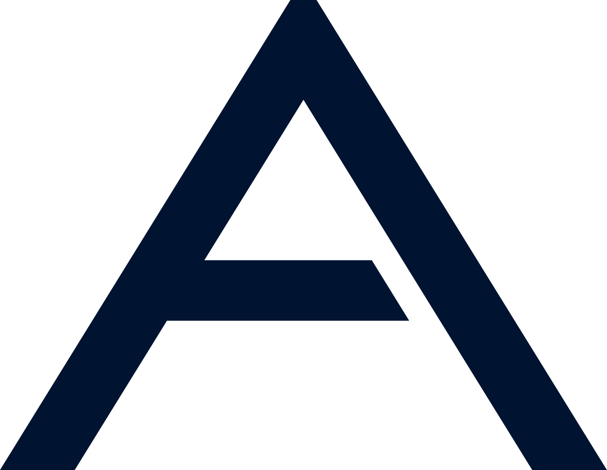
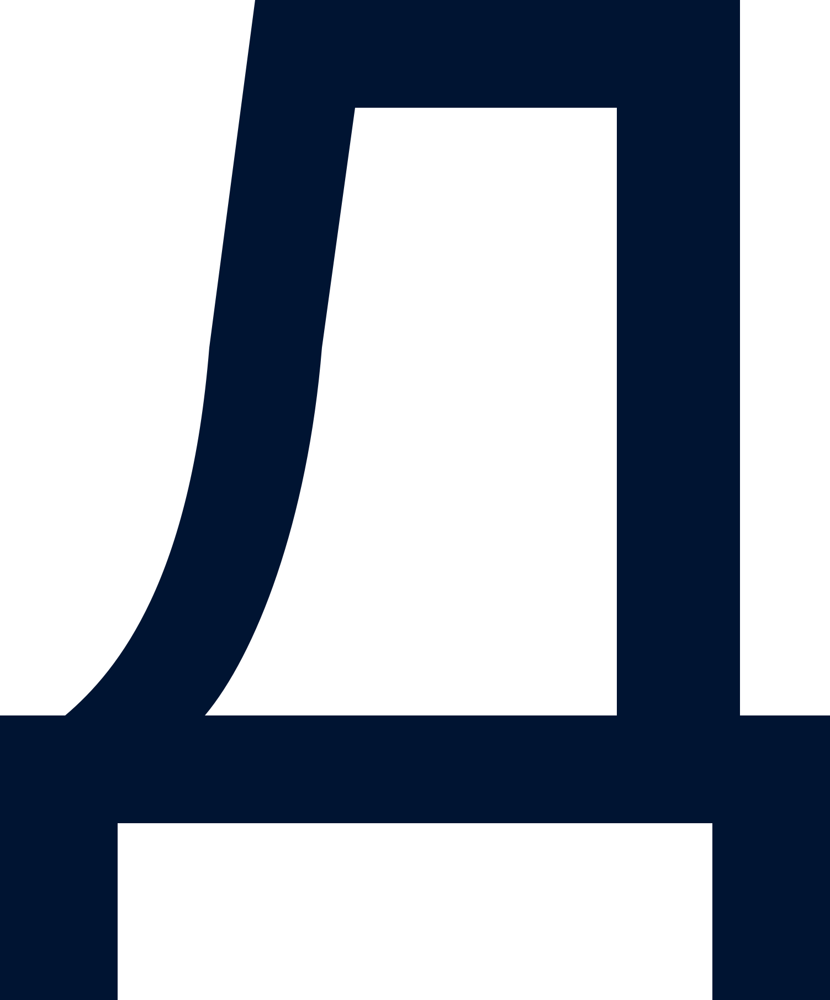
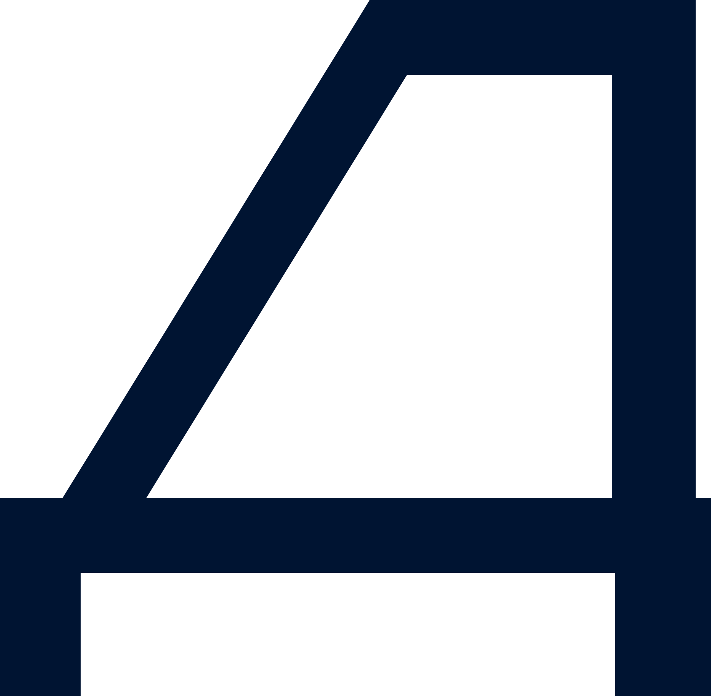
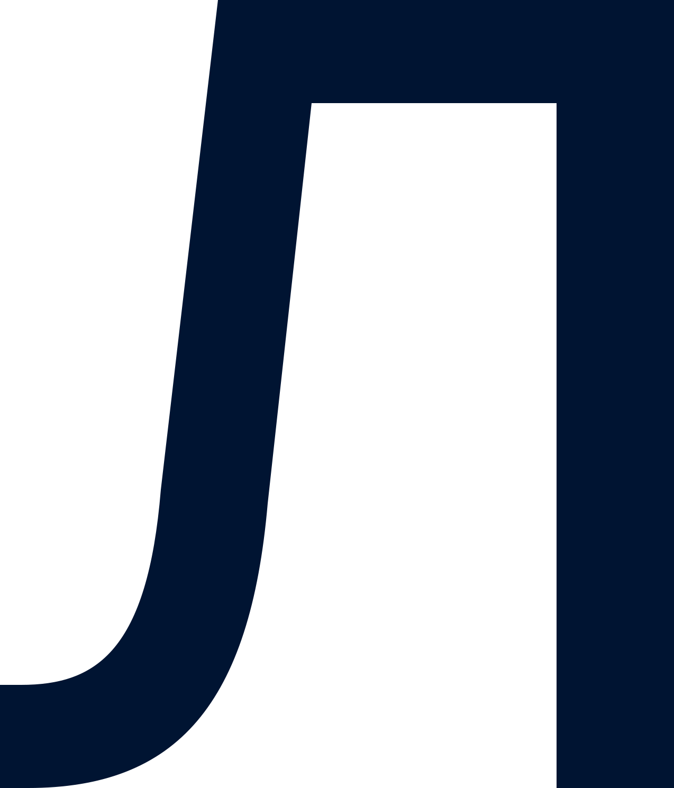
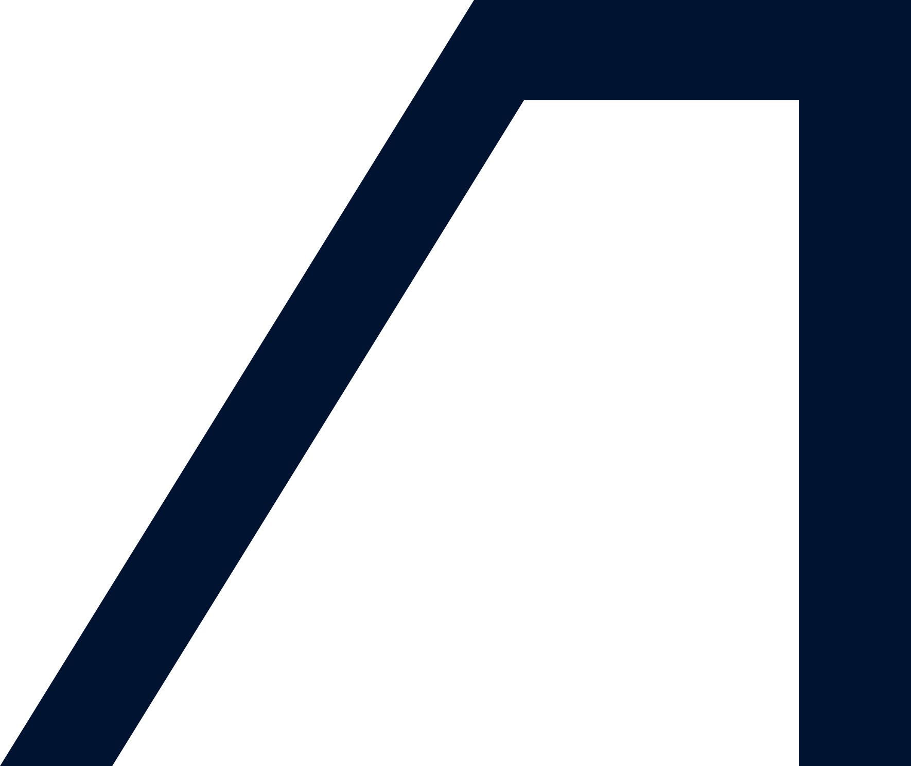

ARVECTUM GOLDEN STEP / v0.100
A/А Display: оригинальный угол и правый разрыв
Display: v0.99 — до исправления
A А
АРВЕКТУМ
Старая конструкция Inter с наклоном около 70°.
Display: v0.100 — корректировка
A А
АРВЕКТУМ
Новый контур первой A утверждённого логотипа, сохранён без масштабирования.

Эталон: исходный утверждённый вектор A из Wordmark C. Перекладина опирается СЛЕВА и разрывается СПРАВА. Основные диагонали — 58,2825°, а не ≈70°.
ARVECTUM GOLDEN STEP / v0.100
A/А Text: закрытая перекладина, тот же наклон
Text: v0.99 — до исправления
A А
АНАЛИТИКА
Ранее закрытая А из Inter-конструкции с наклонами около 70°.
Text: v0.100 — корректировка
A А
АНАЛИТИКА
Закрытая Arvectum Text с геометрией ног логотипа, θ=58,2825°.
Ширина A/А теперь 2050 UPM вместо 1379/1338. Это намеренное изменение метрик, которое может изменить переносы: старые правила кернинга сохраняются как история, но ещё не приняты оптически.
ARVECTUM GOLDEN STEP / v0.100
Д/Л: прямые наклонные, трапециевидные формы
Display v0.100
Д Л
ДЕЛО · ЛИДЕР
Text v0.100
Д Л
ДЕЛО · ЛИДЕР
Display · Д · v0.99

Display · Д · v0.100

Display · Л · v0.99

Display · Л · v0.100

Левые внешние и внутренние прямые параллельны и совпадают с эталонным углом логотипа; Bézier-дуги прошлой версии полностью устранены. Д сохраняет нижнюю замкнутую перемычку и два выступа.
ARVECTUM GOLDEN STEP / v0.100
Строчные д/л: те же правила на уровне x-height
Display v0.100 — д/л
д л
12 px
Деловое предложение и план для отдела.
14 px
Деловое предложение и план для отдела.
16 px
Деловое предложение и план для отдела.
18 px
Деловое предложение и план для отдела.
24 px
Деловое предложение и план для отдела.
Text v0.100 — д/л
д л
12 px
Деловое предложение и план для отдела.
14 px
Деловое предложение и план для отдела.
16 px
Деловое предложение и план для отдела.
18 px
Деловое предложение и план для отдела.
24 px
Деловое предложение и план для отдела.
Высота строчных 1056 UPM; оба левых края каждой формы имеют прямой наклон θ. Нижние элементы различаются: л разомкнута, д имеет замкнутую нижнюю планку и выступы. Нужна отдельная проверка читателями.
ARVECTUM GOLDEN STEP / v0.100
Результат проверки ВСЕХ диагоналей
Display / полный CFF-аудит
115 / 4677 крупных прямых диагоналей в допуске ±0,5°
A:✓ А:✓ Д:✓ Л:✓ д:✓ л:✓ K:OPEN К:OPEN И:✓ и:OPEN М:OPEN M:OPEN Х:OPEN X:OPEN
Сканированы все 2937 глифов, включая ещё не доработанные исходные формы Inter.
Text / полный CFF-аудит
182 / 4730 крупных прямых диагоналей в допуске ±0,5°
A:✓ А:✓ Д:✓ Л:✓ д:✓ л:✓ K:OPEN К:OPEN И:✓ и:OPEN М:OPEN M:OPEN Х:OPEN X:OPEN
Сканированы все 2937 глифов, включая ещё не доработанные исходные формы Inter.
A/А, Д/Л и д/л проходят строгий локальный допуск ±0,08°. Однако K/К, M/М, X/Х и многие унаследованные знаки всё ещё используют другие углы. Глобальное соответствие не утверждено; следующая работа должна последовательно исправлять семейства с сохранением различимости.